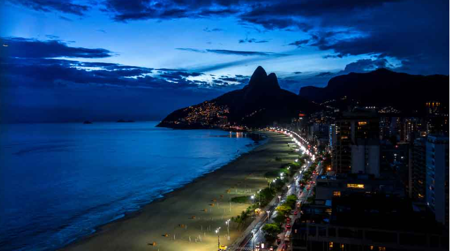
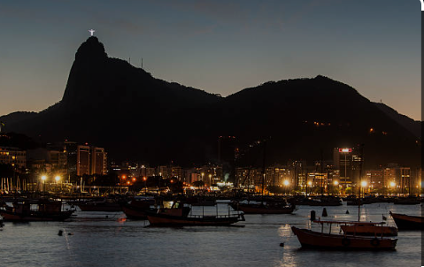
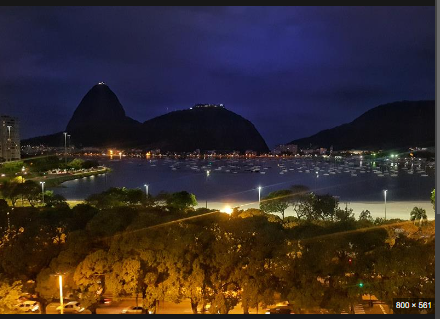

Copacabana
Noticias do Bairro da Princesinha do Mar
Famosa pela praia em forma de meia-lua, Copacabana é um dos bairros mais animados do Rio. Ela atrai moradores e turistas para atividades ininterruptas nas suas areias e no calçadão desenhado. Entre os arranha-céus com vista para a praia, estão o hotel Copacabana Palace em estilo art déco e o exuberante Forte de Copacabana, que abriga um museu militar. Mais para dentro do bairro, cafés descontraídos e bares casuais enchem as ruas "sossegadas".
Prepare-se agora para conhecer a fundo Copacabana, sua história, curiosidades e seus pontos turísticos imperdíveis.
O nome Copacabana tem origem no século XVII com a chegada de comerciantes de prata bolivianos e peruanos à região. Quando chegaram ao país, os imigrantes trouxeram consigo uma imagem de Nossa Senhora de Copacabana, que foi depositada no interior de uma capela erguida sobre um rochedo.
Diferente do que conhecemos hoje em dia, até o final do século XIX Copacabana era um local de difícil acesso. Na região, viviam apenas alguns pescadores em suas chácaras e sítios. Na época, além da Igreja de Nossa Senhora de Copacabana, o bairro contava com o famoso Forte Reduto do Leme.
Em 1892 foi inaugurado o túnel no Morro de Vila Rica, Túnel Real Grandeza, conhecido como Túnel Velho, atual Túnel Alaor Prata.
Assim, tornou-se possível o acesso entre Copacabana e Botafogo e, consequentemente, a sua integração com o restante da cidade. A ampliação das linhas de bonde também contribuiu nesse sentido.
Em 1905 há mais um importante marco para a história do bairro. O prefeito Pereira Passos iniciou a obra da Avenida Atlântica, entregue em 1906 pelo prefeito Sousa Aguiar. Do período data também a construção do famoso calçadão de Copacabana, construído com pedras vindas de Portugal.
A orla de Copacabana passou por significativas mudanças mais tarde na década de 1970, quando houve a sua duplicação para facilitar o intenso fluxo de veículos.
Urca
Noticias do Bairro do Rei Roberto Carlos
Situada em um promontório com vista para a Baía de Guanabara, a rica Urca é dominada pela corcunda icônica do Pão de Açúcar, cujo cume pode ser alcançado por trilhas de escalada ou teleférico. Escondidas em meio a ruas residenciais tranquilas de casas e prédios charmosos estão as pequenas Praia da Urca e Praia Vermelha. Durante o happy hour e nos finais de semana, bares descontraídos à beira-mar se tornam pontos de encontro animados para os jovens da região.
Uma das regiões mais emblemáticas e bonitas da cidade do Rio de Janeiro, a Urca tem um passado extremamente marcante e ligado à história do Brasil.
Por séculos, o bairro da Urca, como conhecemos hoje, não existia. As águas da Guanabara batiam diretamente nas rochas que circundam a Urca e o Pão de Açúcar. De um lado de onde hoje é o bairro da Urca, ficava a praia da Saudade e a praia Vermelha. Do outro, a praia de Fora e o Cara de Cão com a Fortaleza de São João.
A região onde hoje fica o bairro da Urca, que fez parte de todo o contexto que envolveu os conflitos entre portugueses, franceses e índios, servindo de base militar para os portugueses durante século XVI, começou a ganhar uma forma mais parecida com a atual somente 1870.
Praia de Botafogo
Noticias do Bairro Mais carioca do Mundo
A praia fica no bairro de Botafogo que liga o centro e a zona sul da cidade. Ali é o reduto da classe média alta e tem muitas opções de lazer.
O bairro é cercado por restaurantes diversos, shoppings, escolas, edifícios comerciais, casas, cinemas, além de locais para aproveitar a noite e curtir o local.
A Praia de Botafogo possui 700 metros de extensão e é muito famosa por sua vista para o Pão de Açúcar, a Baía de Guanabara e o Morro da Urca. Um belo programa é ir até lá e observar o pôr do sol, já que o banho nas suas águas não é permitido, devido a grande poluição do mar local.
Apenas barco e vela são opções aceitáveis. Sendo a vela muito própria para ser praticada ali, em função das águas calmas.
Quem quiser praticar algum esporte de areia pode escolher: vôlei, futebol, futvôlei, etc. Ciclismo, corridas e caminhadas são realizadas, afinal, existe ali uma ciclovia e um calçadão que vai até a Praia do Flamengo. Ainda é muito comum, por ser uma praia de nome, acontecerem alguns shows e espetáculos abertos para o público.